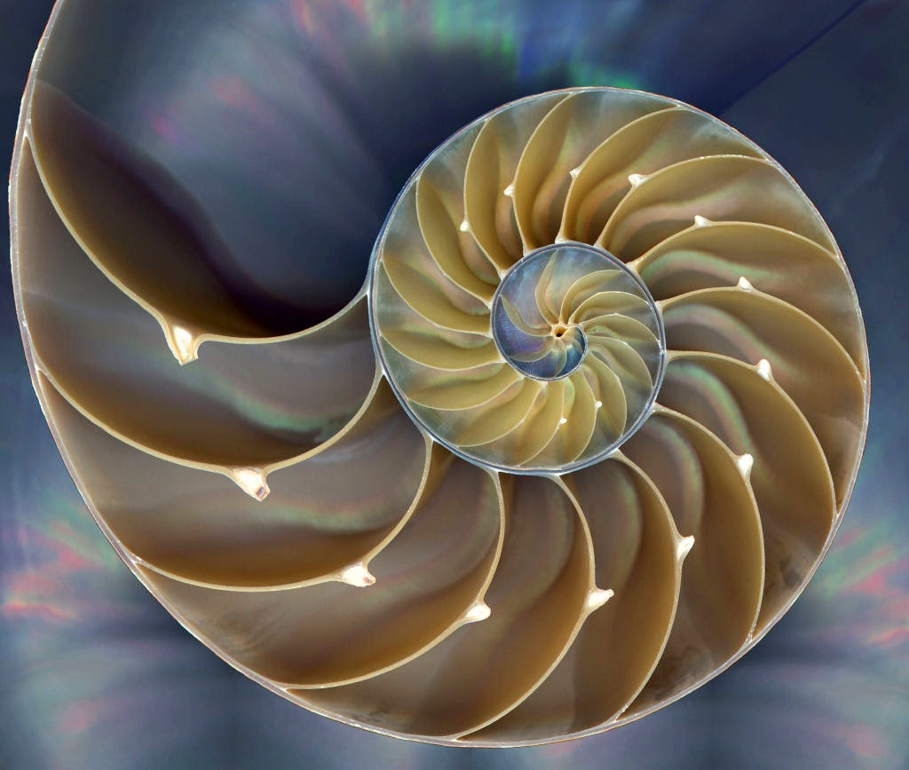

Fractais
Fractal é um objeto comumente encontrado na natureza, veja os exemplos abaixo.

Um fractal é um objeto geométrico que pode ser dividido em partes, cada uma das quais
semelhante ao objeto original. Diz-se que os fractais têm infinitos detalhes, são geralmente
autossimilares e de escala. Em muitos casos um fractal pode ser gerado por um padrão repetido,
tipicamente um processo recorrente ou iterativo.
Uma outra definição para fractal é a de que são objetos cuja dimensão não é um número inteiro.
Como por exemplo um ponto que tem dimensão 0, ou uma linha que tem dimensão 1, um quadrado de dimensão 2, etc.
Fractais são figuras da geometria não classica.
A baixo temos a curva de koch.
Para gerarmos esta curva seguimos os seguintes passos:
(1) Divide-se o segmento de recta em três segmentos de igual comprimento.
(2) Desenha-se um triângulo equilátero (fazendo um ângulo de π/3 radianos (60 graus)), em que o segmento central, referido no primeiro passo, servirá de base.
(3) Apaga-se o segmento que serviu de base ao triângulo do segundo passo.

A geometria fractal é o ramo da matemática que estuda as propriedades e o comportamento dos fractais. Descreve muitas situações que não podem ser explicadas facilmente pela geometria clássica, e foram aplicadas em ciência, em tecnologia e em arte gerada por computador.
Na atividade a seguir você poderá mexer nos fractais e criar varios tipos diferentes deles. Para criar fractais vamos usar o jogo do caos, um algoritmo descrito inicialmente por Barnsley em 1988.